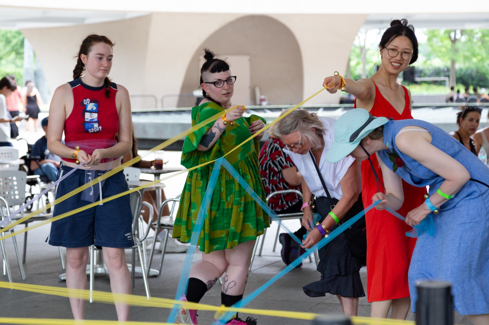
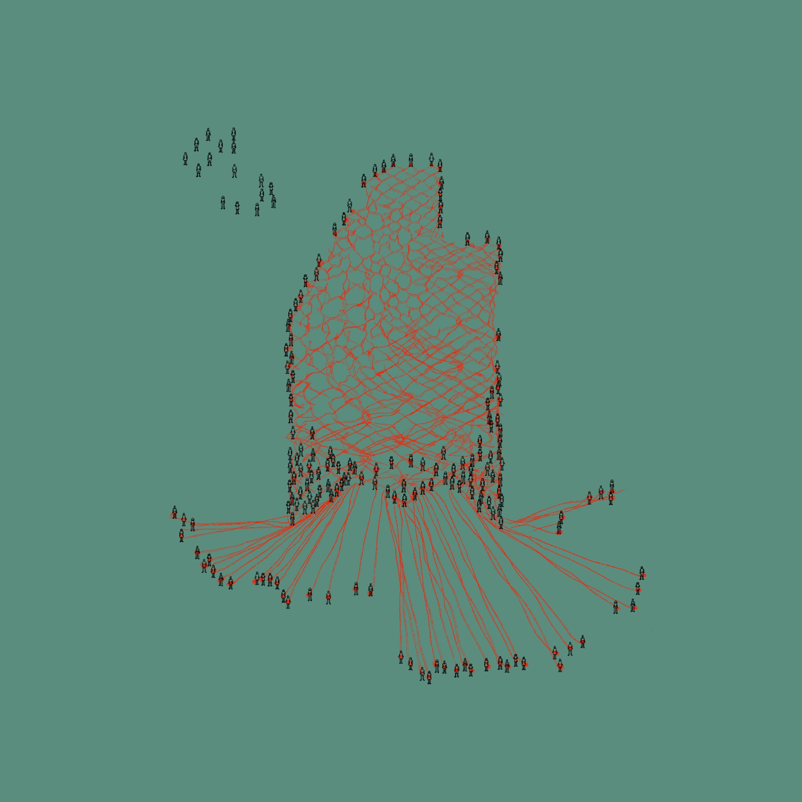

Ground Ensemble
Ground Ensemble is a movement-based, participatory performance where fifty or more participants collectively "lace" an open field by interweaving paths with yarn carried on their torsos. As they interlace, participants create a sprawling lace pattern, formed by aesthetic and relational intersections, defining both intricate paths and open spaces, or "holes." The holes, central to lace-making, symbolize layered histories—from fragile marks of wear on fabric to symbols of power through decorative cloth.
Inspired by the complex craft of bobbin lace, where individual threads form self-supporting designs, each participant in Ground Ensemble acts as a self-organizing "bobbin" or "pin." Together, they create an evolving social fabric, holding tension and space through collaborative movement, echoing the labor and creativity of historical lace-makers, who used their craft to define meaningful spaces within restrictive social fabrics.
Unlike woven cloth, lace is flexible, adaptive, and open-ended, welcoming intersections and new participants at any point. The performance suggests a new approach to collective visibility and belonging, as participants weave their unique paths and struggles into a shared fabric that embodies resilience and mutual care. Drawing on Audre Lorde's idea of social "love," Ground Ensemble invites reflection on how individuals, bound by their histories, might "embellish" shared spaces and imagine pathways forward through a coalition of interwoven lives and perspectives.
The 2024 Sound Scene Festival hosted by the Hirshhorn Museum and Sculpture Garden featured our work during a very busy Solstice weekend. We conducted a drop-in workshop version of this performance and engaged visitors of the festival and the museum.
{kind=link}

{kind=link}
